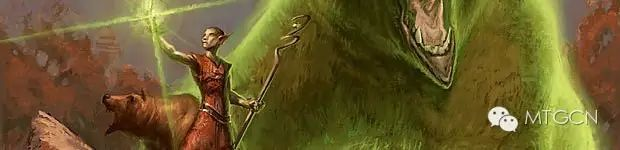

作者：Mark Rosewater
译者：Wolfgang.l@MTGCN
原文地址：https://magic.wizards.com/en/articles/archive/making-magic/nuts-bolts-design-skeleton-2010-02-15
译文地址：微信公众号@MTGCN
许久以前，我写了第一篇螺母和螺栓专栏（是讲卡牌代码的）。其背后的主要思想就是说卡牌设计过程中的许多小细节以及理解设计过程就是需要理解我们做的这些小事。在专栏文的末尾，我问大家是否还想看这类的专栏，结果回复一致都是“想看，但别太经常写”。所以过了这么久，我又给大家带来了一篇螺母和螺栓专栏，今天的话题是设计骨架。
设计衣橱中的骨架
今天的专栏我们从回答一个问题开始：什么是设计骨架？我能想到最简单的比喻就是蓝图。在一个建筑工人可以开始建造房子之前，设计是需要画出房子在哪儿需要建什么。设计骨架就是这样一个蓝图，它帮助设计师弄清楚一个系列里需要有什么牌。今天，我会构建一个假象的小系列来演示这是如何完成的。我会把这个小系列称作“正义”，是“真理”“正义”“美国路”环境的小系列（注：不是真的，我胡编的）。另外，为了让事情更简化，我只会做出这个系列的普通牌的设计骨架。在真实设计中，非普通，稀有和秘稀也会加上去的。
设计骨架最关键的一部分就是卡牌代码，所以你还没有阅读之前一篇螺母和螺栓专栏文，我强烈建议你读一下（再读此文）。让我们把“正义”的普通牌卡牌代码列出来，我假设“正义”有一个普通的地卡组和五个普通神器。有了这些信息，下面是卡牌代码列表：
CW01 –
CW02 –
CW03 –
CW04 –
CW05 –
CW06 –
CW07 –
CW08 –
CW09 –
CW10 –
CU01 –
CU02 –
CU03 –
CU04 –
CU05 –
CU06 –
CU07 –
CU08 –
CU09 –
CU10 –
CB01 –
CB02 –
CB03 –
CB04 –
CB05 –
CB06 –
CB07 –
CB08 –
CB09 –
CB10 –
CR01 –
CR02 –
CR03 –
CR04 –
CR05 –
CR06 –
CR07 –
CR08 –
CR09 –
CR10 –
CG01 –
CG02 –
CG03 –
CG04 –
CG05 –
CG06 –
CG07 –
CG08 –
CG09 –
CG10 –
CA01 –
CA02 –
CA03 –
CA04 –
CA05 –
CL01 –
CL02 –
CL03 –
CL04 –
CL05 –
首先我要做的事情就是弄明白我们需要多少生物，为此我们需要了解我们对这个系列了解多少：
#1 – 一个系列要有大概50%的生物
生物的比例总是时起时落，研发部目前的原则是在限制赛中，如果最后几张牌还要内心挣扎一下，要比只选最强的牌好玩的多。究其核心，万智牌是一个探索的游戏，因此我们对限制赛有这样的原则，我们希望迫使牌手尝试他们之前没用过的牌。总之，意思就是说六十张普通牌中，只有三十张会是生物牌。
#2 – 颜色有其惯用生物分配比例
以下是按照生物比例最多到最少的颜色排列：
白色 – 曾有很长一段时间，绿色都是生物最多的颜色。但大概一年以前，我们花了些时间试图比较白色和绿色，结果发现绿色生物最多同事普通生物最大是件很傻的事情。白色才是“军队颜色”，所以我们决定让白色拥有最多的生物数量，让绿色拥有最大的普通生物。白色用数量取胜，而绿色用个头取胜。
绿色 – 虽说绿色不再是头一号了，但还是“生物颜色”，因此排名第二。
黑色 – 黑色成了倾向于平衡生物和咒语的颜色，因此位居中间。
红色 – 红色和蓝色是两个咒语颜色，也就是说应该有最多的咒语。不过红色对生物的需求要比蓝色大，因此排名第四。
蓝色 – 总有一个颜色要拥有最少的生物，为什么不让最擅长施咒的颜色担当呢？
神器 – 时不常都会个主题让神器成为生物最多的（尤其是在神器主体的环境，通常都是第一位），但大多数时候神器都只有最多两个普通的生物。
为了搞清楚每个颜色会有什么，我们先算算数学题。我们有三十个卡位，我们又希望每种颜色按照我们刚才的排序分布生物数量。三十个生物，平均每个颜色六个生物。黑色是中间的颜色，因此先给它六个。然后上下的绿色和红色我们分别给七个和五个，在向上和下的白色和蓝色分别给八个和四个。现在就要想一想我们是否需要神器生物，我很想要一个，但这就意味着要从别的颜色偷一个卡位。我会从白色抢一个过来，但为了让白色保持生物优势，我会给白色加一个制造衍生物的瞬间或法术。这就是我让生物总数保持50%而又保持白色“生产军队颜色”的优势地位的方式。
下面就是初步的设计骨架的样子：（记住研发部喜欢把生物放在卡牌代码的前面）
CW01 – 生物
CW02 – 生物
CW03 – 生物
CW04 – 生物
CW05 – 生物
CW06 – 生物
CW07 – 生物
CW08 – 瞬间/法术 – 制造衍生物
CW09 –
CW10 –
CU01 – 生物
CU02 – 生物
CU03 – 生物
CU04 – 生物
CU05 –
CU06 –
CU07 –
CU08 –
CU09 –
CU10 –
CB01 – 生物
CB02 – 生物
CB03 – 生物
CB04 – 生物
CB05 – 生物
CB06 – 生物
CB07 –
CB08 –
CB09 –
CB10 –
CR01 – 生物
CR02 – 生物
CR03 – 生物
CR04 – 生物
CR05 – 生物
CR06 –
CR07 –
CR08 –
CR09 –
CR10 –
CG01 – 生物
CG02 – 生物
CG03 – 生物
CG04 – 生物
CG05 – 生物
CG06 – 生物
CG07 – 生物
CG08 –
CG09 –
CG10 –
CA01 – 生物
CA02 –
CA03 –
CA04 –
CA05 –
CL01 –
CL02 –
CL03 –
CL04 –
CL05 –
仅仅知道它们是生物还不够，下面我们要搞清楚两件事。第一，我想确保我们有一些长青关键字生物；第二，首席设计师需要能把握它们有多大。对于设计骨架来说，我们喜欢用三个尺寸形容：小号，中号和大号。小号是从0/1一直到2/3左右，中号是3/3到4/5，大号则是5/5或以上。让我们看看每种颜色：
白色
关键字 – 白色的普通牌可以有如下异能：飞行，先攻，警戒，有时有闪现，反色保护或系命。
尺寸 – 绝大部分白色生物都是小号的。为了限制赛用途，我们开始给白色更多的中号生物，但是大多数白色生物依然是小号的。
蓝色
关键字 – 蓝色可以有飞行和帷幕，有时候有海岛行者或闪现。
尺寸 – 蓝色通常全都是小生物，一个中号生物，有时候有一个大号生物。大号生物通常都是巨蛇之类的东西。
黑色
关键字 – 黑色的普通牌有如下异能：飞行，死触，威吓，有时有敏捷，系命，重生或沼泽行者。
尺寸 – 黑色拥有小号和中号生物的混合，但从没有大号生物（除却一些奇怪的环境主题）。
红色
关键字 – 红色的普通牌有如下异能：敏捷，先攻，践踏，有时有威吓或山脉行者。炎息虽然不是个关键字，但基本每个系列都有类似的异能出现。
尺寸 – 红色，像黑色一样，是小号和中号生物的混合。偶尔红色会有一个大号生物，但通常都是大号生物里最小的那个尺寸。
绿色
关键字 – 绿色的普通牌有如下异能：践踏，死触，重生，有时有闪现，树林行者，延势，帷幕或警戒。
尺寸 – 绿色生物是小号和中号生物的混合，而且总是有至少一个大号生物（有时有两个）。
我们将这些信息都混到一起。注意我只是在粗略估计哪些关键字会出现在什么尺寸的生物上，当前的设计不是我最终的版本。比如如果可能的话，我会把警戒从中号生物挪到小号生物上。一下是目前设计骨架的样子：
CW01 – 生物, 小号
CW02 – 生物, 小号, 飞行
CW03 – 生物, 小号, 先攻
CW04 – 生物, 小号
CW05 – 生物, 小号
CW06 – 生物, 中号, 警戒
CW07 – 生物, 中号, 飞行
CW08 – 瞬间/法术 – 制造衍生物, 飞行
CW09 –
CW10 –
CU01 – 生物, 小号, 飞行
CU02 – 生物, 小号, 帷幕
CU03 – 生物, 中号, 飞行
CU04 – 生物, 大号
CU05 –
CU06 –
CU07 –
CU08 –
CU09 –
CU10 –
CB01 – 生物, 小号
CB02 – 生物, 小号, 飞行
CB03 – 生物, 小号, 死触
CB04 – 生物, 中号, 威吓
CB05 – 生物, 中号
CB06 – 生物, 中号
CB07 –
CB08 –
CB09 –
CB10 –
CR01 – 生物, 小号
CR02 – 生物, 小号, 先攻
CR03 – 生物, 小号
CR04 – 生物, 中号, 敏捷
CR05 – 生物, 中号, 践踏
CR06 –
CR07 –
CR08 –
CR09 –
CR10 –
CG01 – 生物, 小号
CG02 – 生物, 小号, 重生
CG03 – 生物, 小号, 死触
CG04 – 生物, 中号, 延势
CG05 – 生物, 中号
CG06 – 生物, 中号
CG07 – 生物, 大号, 践踏
CG08 –
CG09 –
CG10 –
CA01 – 生物, 中号
CA02 –
CA03 –
CA04 –
CA05 –
CL01 –
CL02 –
CL03 –
CL04 –
CL05 –
现在生物们已经就位了，我们把注意力转向其他的卡牌类型吧。
神器 – 显然，我已经分配了五个普通的神器。很有可能这些神器都是些简单的功能牌。没有艾斯波那样的主题，神器不会有颜色的。
结界 – 我们有一个方针就是普通牌的结界我们只做灵气。有些环境主题可能会有例外，但如果没有特殊情况你是不会见到普通稀有度的全局结界的（我知道这个说法是老用法，但我不知道有什么新词替代，所以我依然沿用）。大多数颜色至少都有一个灵气，白色和绿色有时候会多于一个。
瞬间 – 五种颜色都有瞬间，但白色和蓝色通常都比其他颜色比例要大。
地 – 和神器一样，地也有普通牌的位置，而且不和颜色相关。
鹏洛客 – 由于一些奇怪的理由，我们不在普通稀有度上做这个卡牌类型。
法术 – 所有颜色独有法术，但黑色和绿色比例更大一些。
部族 – 部族是唯一一个我们不是每个系列都用的类型。我经常收到来信，问一个特定的咒语怎样会有部族类型。答案是，当它是环境的重要组件是我们才会用到部族类型。（译注：部族这个类别已经不再被支持，也就是将来不会再有部族类别的新牌出现。）
把这些信息再加进来：
CW01 – 生物, 小号
CW02 – 生物, 小号, 飞行
CW03 – 生物, 小号, 先攻
CW04 – 生物, 小号, 闪现
CW05 – 生物, 中号, 警戒
CW06 – 生物, 中号, 飞行
CW07 – 法术 – 制造衍生物, 飞行
CW08 – 瞬间
CW09 – 瞬间
CW10 – 结界, 灵气
CU01 – 生物, 小号, 飞行
CU02 – 生物, 小号, 帷幕
CU03 – 生物, 中号, 飞行
CU04 – 生物, 大号
CU05 – 瞬间
CU06 – 瞬间
CU07 – 瞬间
CU08 – 法术
CU09 – 法术
CU10 – 结界, 灵气
CB01 – 生物, 小号
CB02 – 生物, 小号, 飞行
CB03 – 生物, 小号, 死触
CB04 – 生物, 中号, 威吓
CB05 – 生物, 中号
CB06 – 生物, 中号
CB07 – 瞬间
CB08 – 法术
CB09 – 法术
CB10 – 结界, 灵气
CR01 – 生物, 小号
CR02 – 生物, 小号, 先攻
CR03 – 生物, 小号
CR04 – 生物, 中号, 敏捷
CR05 – 生物, 中号, 践踏
CR06 – 瞬间
CR07 – 瞬间
CR08 – 瞬间
CR09 – 法术
CR10 – 结界, 灵气
CG01 – 生物, 小号
CG02 – 生物, 小号, 重生
CG03 – 生物, 小号, 死触
CG04 – 生物, 中号, 延势
CG05 – 生物, 中号
CG06 – 生物, 中号
CG07 – 生物, 大号, 践踏
CG08 – 瞬间
CG09 – 法术
CG10 – 结界, 灵气
CA01 – 生物, 中号
CA02 – 牺牲效果
CA03 – 横置异能
CA04 – 武具
CA05 – 武具
CL01 – 产W
CL02 – 产U
CL03 – 产B
CL04 – 产R
CL05 – 产G
请注意我在设计骨架上做的一些变动，我加了一些东西进去。最好的例子就是白色，我意识到有些别扭，所以我做了几件事。第一，我去掉了一个生物，因为有十个卡位给了神器和地，白色Hold不住八个生物。因为我想给瞬间留更多空间，让白色有一些战斗中的伎俩，所以我让制造衍生物的咒语变成了法术。然后给了一个白色生物闪现异能，因为即便有了两个瞬间，我还是需要让白色有一些奇袭的能力。
这也展示了设计骨架的作用。设计骨架不是为了锁定设计师的思路，而是让设计师意识到他们需要分配什么。当某些东西行不通的时候，设计师就需要重新调整设计骨架以适应新的需求。
另外，我也决定了我想要些什么功能的神器，并且通过标注颜色指出地是一个卡组。
接下来，我们要植入一些系列的主题进去。让我们假设真理、正义和美国路这个环境是坟场主题的，真理引入了一个基于坟墓场的机制（我叫他搅坟，还是为了本文而杜撰的），适用于永久物和咒语。这个机制可以植入任何类型的咒语上，这样我就可以把它和各种效果配合起来。为达到此效果，我除了把新的机制加进去之外，还加入了一些基本效果。让我们快速过一遍，这些效果基本在每个系列的普通牌中都会在其相应的颜色中出现：
白色 – 白色总有一些获得生命，结界去除还有生物去除（包括和平主义效果的），还有一些战斗伎俩（小规模的攻防膨胀以及赋予异能都是很常见的）。也经常有团队膨胀（“你操控的所有生物得+1/+1”直到回合结束）以及伤害防止/转向。
蓝色 – 蓝色总会有一个反击咒语（经常是两个，一个硬康一个软康），回手（“将XX移回其拥有者手中”），抓牌，生物控制类型的结界（经常是锁定类型的），有时候有滤牌，让生物缩小（“目标生物得-N/-0直到回合结束”），或者颠倒功能（“横置或重置目标XX”）。
黑色 – 黑色总是有若干个生物去除（经常是“消灭目标非X生物”和“目标生物得-N/-N直到回合结束”），弃牌，坟场生物复活（“将一张生物牌从你坟场移回手中”），也经常有力量膨胀（“XX得+N/+0直到回合结束”），用血换牌，或者给生物伤害/让牌手失去生命而你获得生命的吸血效果。
红色 – 红色总会有直接伤害（有些打牌手，有些打生物，有些两者都能打），力量膨胀，惊慌效应（“目标生物不能阻挡”），有时候有加敏捷效果以及炸地。

绿色 – 绿色总会有攻防膨胀，找地，神器/结界去除，经常有生产法术力，获得生命，浓雾效应（“防止所有战斗伤害”），以及消灭飞行异能。
要注意，在普通牌不能出现的异能还是可以在非普通牌中出现的，因此在限制赛中依然可以起到作用。
有了这些，我们再过一遍设计骨架：
CW01 – 生物, 小号
CW02 – 生物, 小号, 飞行, 搅坟
CW03 – 生物, 小号, 先攻
CW04 – 生物, 小号, 闪现, 进场获得生命
CW05 – 生物, 中号, 警戒
CW06 – 生物, 中号, 飞行
CW07 – 法术 – 制造衍生物, 飞行
CW08 – 瞬间, 力量膨胀
CW09 – 瞬间, 结界去除
CW10 – 结界, 生物去除
CU01 – 生物, 小号, 飞行,
CU02 – 生物, 小号, 帷幕
CU03 – 生物, 中号, 飞行
CU04 – 生物, 大号
CU05 – 瞬间, 硬康, 搅坟
CU06 – 瞬间, 软康
CU07 – 瞬间, 回手
CU08 – 法术, 抓牌
CU09 – 法术
CU10 – 结界, 灵气, 生物去除
CB01 – 生物, 小号
CB02 – 生物, 小号, 飞行
CB03 – 生物, 小号, 死触, 搅坟
CB04 – 生物, 中号, 威吓
CB05 – 生物, 中号, 进场起死回生
CB06 – 生物, 中号
CB07 – 瞬间, 生物去除, 搅坟
CB08 – 法术, 弃牌
CB09 – 法术, 吸生物血
CB10 – 结界, 灵气, 正面异能, 搅坟
CR01 – 生物, 小号 – 进场直接对牌手造成伤害
CR02 – 生物, 小号, 先攻
CR03 – 生物, 小号
CR04 – 生物, 中号, 敏捷
CR05 – 生物, 中号, 践踏
CR06 – 瞬间 – 直接对生物造成伤害
CR07 – 瞬间 – 直接对两者造成伤害
CR08 – 瞬间 – 力量膨胀
CR09 – 法术 – 惊慌, 搅坟
CR10 – 结界, 灵气, 正面异能
CG01 – 生物, 小号, 搅坟, 进场神器/结界去除
CG02 – 生物, 小号, 重生
CG03 – 生物, 小号, 死触
CG04 – 生物, 中号, 延势, 搅坟
CG05 – 生物, 中号
CG06 – 生物, 中号
CG07 – 生物, 大号, 践踏
CG08 – 瞬间, 力量/防御力膨胀
CG09 – 法术, 获得生命
CG10 – 结界, 灵气, 正面异能
CA01 – 生物, 中号
CA02 – 牺牲效果, 法术力相关
CA03 – 横置异能, 法术力相关
CA04 – 武具, 力量/防御力膨胀
CA05 – 武具, 躲避式异能
CL01 – 产W
CL02 – 产U
CL03 – 产B
CL04 – 产R
CL05 – 产G
把所有关键字加进去之后，我发现我挤进来的效果太多了。我可以通过使用生物卡位来解决其中一些问题，例如可以用生物的进场触发异能来模拟法术效果。这个设计骨架也迫使我考虑一些诸如每种颜色想要用多少搅坟这类的问题。另外，我也开始检查不同颜色的风格特色是否合适。注意到我刚才在黑色和绿色这两个坟墓场颜色是多么偏重这个异能的。我也使得白色和绿色只在生物上使用这个异能，而红色和蓝色只用在瞬间和法术上。
设计师需要过多少遍设计骨架和每个系列的需求有很大关系，我刚才过的这即便也许够了，有其他问题的时候也许还需要再过几遍。但你可以从我给出的样例骨架看出，大多数普通牌的设计问题都是挤进了太多东西。
一定要记得设计骨架是弹性的，活的，有生命的文档。你创作它的理由是让你对目前拥有的东西有一个整体的感觉。当卡牌开始进来的时候，你就会看到你之前的一些思路是行不通的，而迫使你重新设置骨架。说到底，设计骨架是一个让设计师从大局的角度看一个系列所有动态的组件的重要工具，让设计师清楚一个系列从设计的角度需要什么东西。
直截了当
希望大家喜欢这篇关于万智牌设计的文章，如果大家喜欢的话，敬请期待下一篇螺母和螺栓专栏。
下次再见！
欢迎关注MTGCN订阅号！在这里你可以看到最全面的万智牌背景故事、卡牌设计、卡牌插画、花边趣闻等的内容。希望能将万智牌丰富的内涵全面地展现给大家，而不止是比赛的那一面！